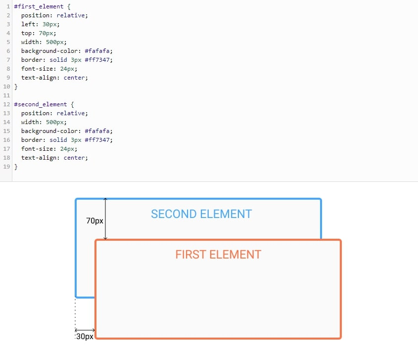
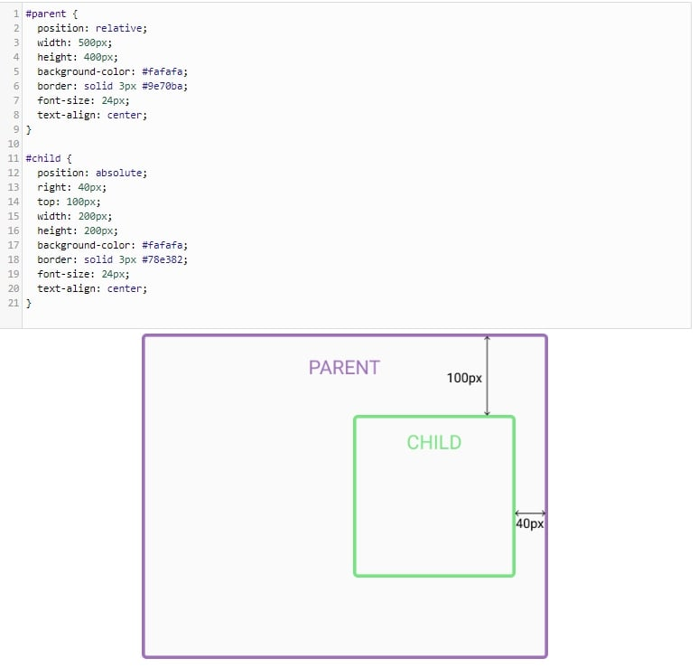

Technical Blog
Sprint 3: JavaScript, The DOM and DevTools
Sprint 3: Approach to Problem Solving
Sprint 2 - Relative, Absolute and Fixed Positioning
Relative Positioning:
When you set the position relative to a particular element, without specifying any other position attributes, such as top, right, bottom, left, nothing will basically happen.
Providing additional positions, such as left 50px or right 50px, it will move from its NORMAL position. This shows that the element is basically relative to itself.
Refer to this example below:
The ‘zero’ element moves to the left and top from its normal position.
The second element stays the same as there were no additional positioning attributes specified.

Absolute Positioning:
The main strength of this type of positioning allows you to place an element preciously where we want it.
The positioning is basically done relative to the first positioned parent element. When there are no positioned parent element, it will be positioned relative to the HTML element.
Refer to the example below:
Parent element has the position set to relative. When you set the position of the child element to absolute, any additional positioning will be done relative to the parent element.

Fixed positioning:
Unlike absolute positioning, an element with fixed positioning stays fixed to one spot on the page, regardless of the size of the browser window.
An element with position: fixed; is positioned relative to the viewport, which means it always stays in the same place even if the page is scrolled. The top, right, bottom, and left properties are used to position the element.